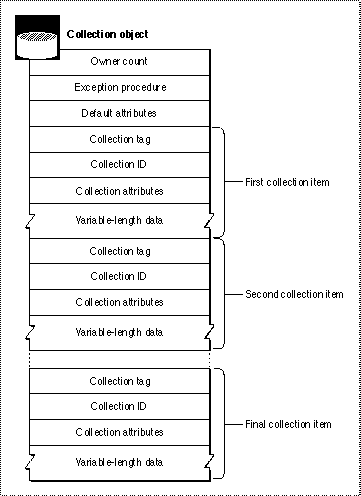

Legacy Document
Important: The information in this document is obsolete and should not be used for new development.
Important: The information in this document is obsolete and should not be used for new development.


Collection Objects
A collection object, or simply a collection, is an abstract data type that allows you to store information. A collection is like an array in that it contains a number of individually accessible items. However, a collection offers some advantanges over an array:
There are some corresponding disadvantages to using a collection versus using an array:
- A collection allows for a variable number of data items. You can add items to a collection or remove items from a collection during run time, and the Collection Manager automatically resizes the collection.
- A collection allows for variable-size items. Each item in a collection can contain data of any size.
A collection is also similar to a database, in that you can store information and retrieve it using a variety of search mechanisms. However, a collection has many more limitations than a real database. For example, the Collection Manager provides only a few mechanisms for searching a collection. Also, a collection is entirely memory-based. You can use a collection only when the entire contents of the collection are in memory, which makes a collection more like a powerful array than a database.
- You must store and retrieve information in a collection using Collection Manager functions, which is not as efficient as accessing an item of an array.
- The Collection Manager stores extra information about the collection and about each item in the collection, so a collection requires more memory than a comparable array.
The internal structure of a collection object is private--you must store information in a collection and retrieve information from it by providing a Collection Manager function with a reference to the collection.
Figure 5-1 depicts the accessible properties of a collection object. Note that, because a collection is an object and not a public data structure, the order of the properties as shown is completely arbitrary.
Figure 5-1 The collection object

As Figure 5-1 shows, a collection object contains
The Collection Manager maintains the owner count for you, although you can increment or decrement it by cloning or disposing of the collection, as described in "Creating or Disposing of a Collection" beginning on page 5-14 and "Cloning or Copying a Collection" beginning on page 5-14.
- an owner count, which reflects the current number of references to the collection
- an exception procedure, which you can use to handle errors that occur while operating on the collection
- default attributes, which are described in "Collection Attributes" beginning on page 5-9.
- a number of collection items, which are described in the next section
The Collection Manager allows you to install an exception procedure for each collection object. When the Collection Manager is operating on a collection and an error occurs, the Collection Manager calls the collection's exception procedure (if you installed one) and passes to it the result code associated with the error that occurred. Your exception procedure can then respond to the error. For more information about exception procedures, see "Getting and Setting the Exception Procedure for a Collection" beginning on page 5-58 and the description of an application-defined exception procedure on page 5-101.